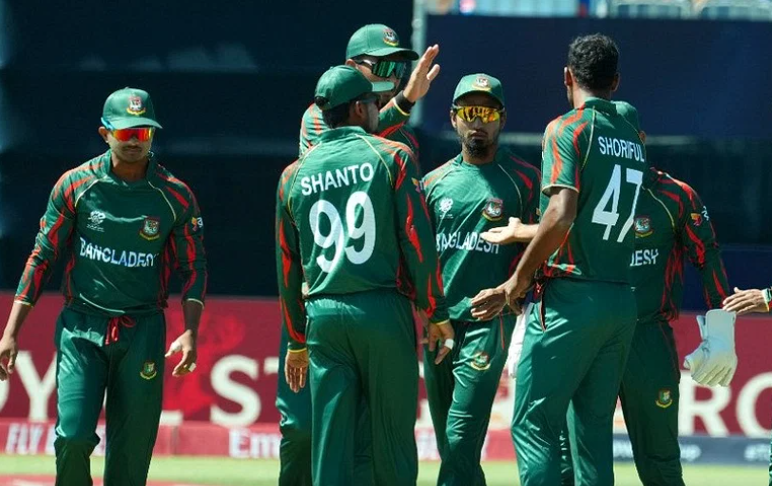

১২০ বলে ১২২ রান তুলল বাংলাদেশ, চোটে হাসপাতালে শরীফুলবিশ্বকাপের প্রস্তুতি ম্যাচ খেলে গা গরমের অপেক্ষায় ছিলেন বাংলাদেশ দলের ক্রিকেটাররা। কিন্তু ডালাসের বাজে আবহাওয়ার কারণে যুক্তরাষ্ট্রের বিপক্ষে প্রথম প্রস্তুতি ম্যাচটি হয়নি। গতকাল অবশ্য নিউইয়র্কের আকাশ ছিল ঝলমলে। নাসাউ কাউন্টি আন্তর্জাতিক ক্রিকেট স্টেডিয়ামের দারুণ কন্ডিশনে ভারতের বিপক্ষে দ্বিতীয় ও শেষ প্রস্তুতি ম্যাচটি খেলে বিশ্বকাপের আগেই হয়তো বিশ্বকাপের উত্তাপ কিছুটা অনুভব করলেন নাজমুল হোসেনরা। নিউইয়র্কের স্টেডিয়ামটিকে বলা হচ্ছে ক্রিকেটের প্রথম ‘মডিউলার’ বা অস্থায়ী স্টেডিয়াম। সেই মাঠের উইকেটই দারুণ ব্যাটিং–সহায়ক, আউটফিল্ডও দ্রুতগতির। এমন কন্ডিশনে কে না ব্যাটিং করতে চাইবে! বিরাট কোহলিকে বিশ্রাম দিলেও প্রথমে ব্যাট করতে নেমে ৫ উইকেটে ১৮২ রান করেছে ভারত। কিন্তু বাংলাদেশ দলের ব্যাটিংয়ের সেই পুরোনো ছবিটাই দেখা গেল। রান তাড়ায় ১০ রানে ৩ উইকেট হারিয়ে শেষ পর্যন্ত ২০ ওভারে তোলে ৯ উইকেটে ১২২। প্রস্তুতি ম্যাচ হলেও দুই দলের জন্য ম্যাচটির আলাদা গুরুত্ব ছিল। ভারত গ্রুপ পর্বে তাদের চার ম্যাচই খেলবে নিউইয়র্কে। বাংলাদেশেরও একটি ম্যাচ এই মাঠে, ১০ জুন দক্ষিণ আফ্রিকার বিপক্ষে। দুই দলই কন্ডিশন, মাঠের আকৃতির তথ্য নিতে চাইবে। নাসাউ কাউন্টি স্টেডিয়ামের অস্ট্রেলিয়ায় তৈরি ড্রপ ইন উইকেটে ছিল ধারাবাহিক বাউন্স ও গতি, যা পেসারদের বাড়িয়ে দেয় সাহায্যের হাত। কাল সেটি কাজে লাগিয়েই বাংলাদেশ দলের টপ অর্ডারে ফাটল ধরান ভারতের পেসার অর্শদীপ সিং ও মোহাম্মদ সিরাজ। দুই বাঁহাতি সৌম্য সরকার ও নাজমুল হোসেন আউট হয়েছেন শূন্য রানে, লিটন ৬ রানে। তানজিদ হাসান ও তাওহিদ হৃদয় কিছুক্ষণ টিকে ছিলেন। হৃদয় ১৩ ও তানজিদ ১৭ রান করে আউট হলে ম্যাচ থেকেই ছিটকে পড়ে বাংলাদেশ। মাহমুদউল্লাহ ও সাকিব আল হাসান ৭৫ রানের জুটি গড়ে শুধু দলের মান রক্ষা করেন। স্বেচ্ছা আউট হওয়া মাহমুদউল্লাহর ব্যাট থেকে আসে ২৮ বলে ৪০ রান, সাকিব খেলেন ৩৪ বলে ২৮ রানের ইনিংস। ৬০ রানে হারা ম্যাচে বোলিংয়ে ইনিংসের শুরুতেই প্রথম ওভারে সঞ্জু স্যামসনকে (৬ বলে ১) এলবিডব্লুর ফাঁদে ফেলেন শরীফুল ইসলাম। তবু পাওয়ারপ্লেতে ভারত তোলে ৫৫ রান। আরেক ওপেনার রোহিত শর্মা থামেন ১৯ বলে ২৩ রানে। ভারতের রান রেট অবশ্য ৯-এর নিচে নামতে দেননি পন্ত। স্বেচ্ছায় অবসরে যাওয়ার আগে ৩২ বলে ৪টি করে চার ছক্কায় ৫৩ রান করেন এই বাঁহাতি। |